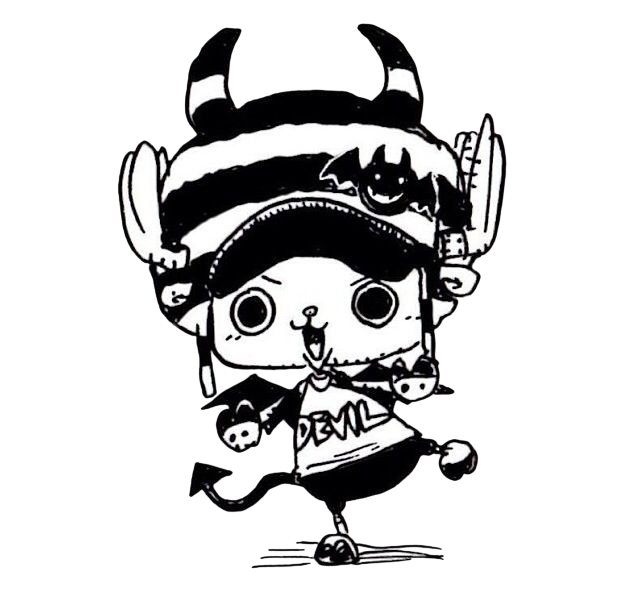

Tony Tony Chopper, also known as "Cotton Candy Lover" Chopper,[6] is the doctor of the Straw Hat Pirates and one of the Senior Officers of the Straw Hat Grand Fleet.[2] He is the sixth member of the crew and the fifth to join, doing so at the end of the Drum Island Arc. He was temporarily forced to join the Foxy Pirates during the Long Ring Long Land Arc but was quickly returned to Luffy's crew. Chopper is a reindeer that ate the Hito Hito no Mi, a Devil Fruit that allows its user to transform into a human hybrid at will. He was taught medicine on Drum Island by his two parental figures, Doctors Hiriluk and Kureha. Chopper aims to travel all across the world in the hopes of accomplishing his dream of being able to cure any disease. Chopper gained his first bounty of Beli50 after the incident at Enies Lobby, having been mistaken for the Straw Hats' pet. After the Dressrosa Arc, it was increased to Beli100, then to Beli1,000 following the Raid on Onigashima.[2]
For more info visit this page